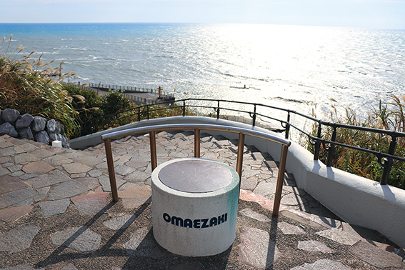

戻る
ケープパーク

概要 : 「海と大地の調和」御前埼灯台から展望台『夕日と風が見えるん台』まで徒歩約10分、 1.5㎞におよぶロマンチックな遊歩道からは、 展望台・広場・四季折々の草花と雄大な海が楽しめます。 展望台から水平線を眺めれば、まあるい地球を実感できます。
住所 : 静岡県御前崎市御前崎1581
営業時間 : 常時解放
電話番号 : 0537-85-1135
(商工観光課)
ホームページ :
https://bit.ly/3gAZVBx